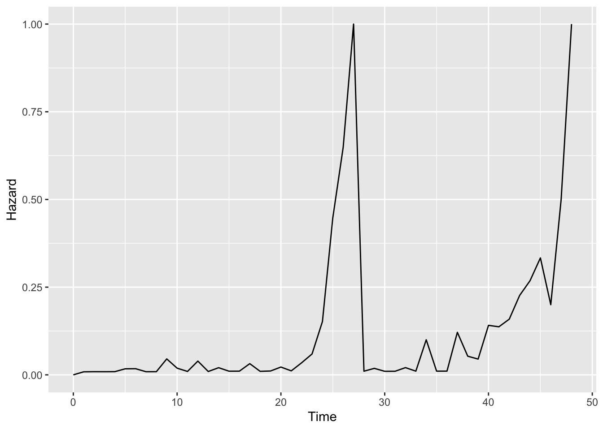
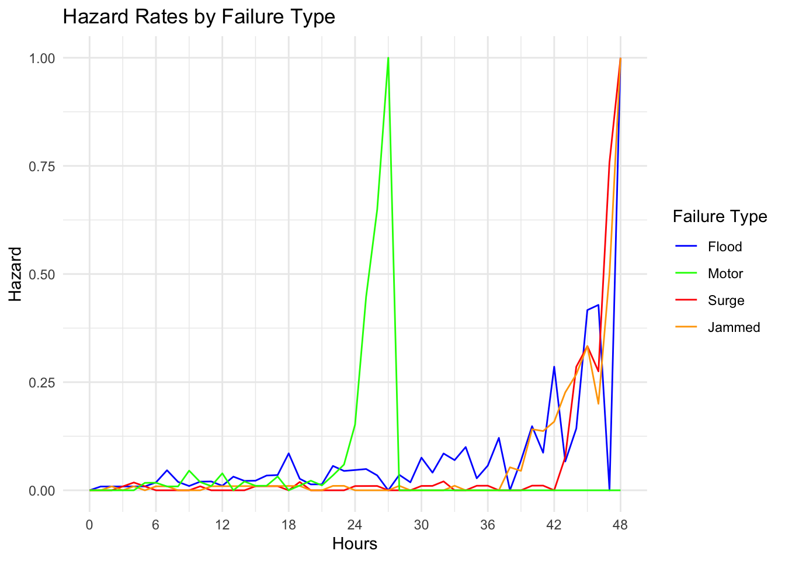

Survival HW 1
2024-11-02
1 Survival Analysis Intro
## [1] TRUE
## attr(,"x-amz-id-2")
## [1] "ejLhvt8IjWLi/t/pKMMh972nBz5Zt0YvpWesOuyW/We7oHOHxPvlsRhZh+k+PUtABTt1pkphtjs="
## attr(,"x-amz-request-id")
## [1] "JSKDE3WYKTX9A6VH"
## attr(,"date")
## [1] "Fri, 10 Jan 2025 19:35:25 GMT"
## attr(,"x-amz-bucket-region")
## [1] "us-east-1"
## attr(,"x-amz-access-point-alias")
## [1] "false"
## attr(,"content-type")
## [1] "application/xml"
## attr(,"transfer-encoding")
## [1] "chunked"
## attr(,"server")
## [1] "AmazonS3"files <- get_bucket_df(
bucket = "s3://survival2024/",
region = "us-east-1",
max = 20000
) %>%
as_tibble()
#Downloading files
save_object(
object = "hurricane.csv", #Change
bucket = "s3://survival2024/",
region = "us-east-1",
file = "hurricane" #Change
)## [1] "hurricane"#You can now start Wrangling the data...
hurricane <- read.csv("hurricane") #Change
hurricane = hurricane %>% dplyr::mutate(Index = row_number())- Give the percentage of pumps within each failure type and percentage of pumps that did not fail.
##
## 0 1 2 3 4
## 316 115 112 111 116# Total number of pumps
total_pumps <- sum(reason_counts)
# Calculate percentages for each failure type
reason_percentages <- (reason_counts / total_pumps) * 100
reason_percentages##
## 0 1 2 3 4
## 41.03896 14.93506 14.54545 14.41558 15.06494No failure: 41.03% Reason 1: 14.94% Reason 2: 14.55% Reason 3: 14.42% Reason 4: 15.06%
- Give the average time until failure for each failure type. Are means a good measure for length of survival? Discuss why or why not.
# Calculate mean failure time for each failure type
average_failure_time <- aggregate(hurricane$hour, by = list(hurricane$reason), FUN = mean, na.rm = TRUE)
# Rename columns for clarity
colnames(average_failure_time) <- c("Failure_Type", "Average_Time_Until_Failure")
# Print the results
average_failure_time## Failure_Type Average_Time_Until_Failure
## 1 0 48.00000
## 2 1 26.44348
## 3 2 41.04464
## 4 3 38.82883
## 5 4 21.93966Reason 1: 26.44 hr Reason 2: 41.04 hr Reason 3: 38.83 hr Reason 4: 21.94 hr Means are not a good measure of length of survival because censored values included in the mean can impact the mean survival time. Median is a better measure.
- Create and upload the survival probability across time for pumps broken down by failure type overlaid into one graph.
# Assuming the SURVIVE variable is coded as 1 for failed and 0 for not failed
surv_object <- Surv(time = hurricane$hour, event = hurricane$survive == 0)
# Fit the Kaplan-Meier survival model, stratified by failure type (REASON)
km_fit <- survfit(surv_object ~ hurricane$reason, data = hurricane)
# Plot survival curves with ggplot2 styling for readability
surv_plot <- ggsurvplot(
km_fit,
data = hurricane,
conf.int = TRUE,
legend.title = "Failure Type",
legend.labs = c("No Failure", "Flood", "Motor", "Surge", "Jammed"),
xlab = "Time (hours)",
ylab = "Survival Probability",
title = "Survival Probability Across Time by Failure Type",
ggtheme = theme_minimal()
)
surv_plot
- Create and upload the graph of conditional failure probabilities across time for pumps broken down by failure type overlaid into one graph.
km_fit <- survfit(surv_object ~ hurricane$reason, data = hurricane)
h = km_fit$n.event/km_fit$n.risk
index.h=rep(0,length=(max(hurricane$hour)+1)) #Need to add 0
index.h[(km_fit$time)+1]=h #Because of 0
haz.plot=data.frame(cbind(seq(0,max(hurricane$hour)), index.h))
colnames(haz.plot)=c("Time","Hazard")
ggplot(haz.plot,aes(x=Time,y=Hazard))+geom_line()
ggsurvplot(km_fit, data = hurricane, fun = "cumhaz", conf.int = TRUE, xlab = "Time (hour)", ylab = "Cumulative Hazard", title = "Conditional Failure Probabilities", legend.title = "Failure Type",
legend.labs = c("No Failure", "Flood", "Motor", "Surge", "Jammed"))
surv_object <- Surv(time = filter(hurricane, reason==1)$hour, event = filter(hurricane, reason==1)$survive == 0)
km_fit <- survfit(surv_object ~ 1, data = filter(hurricane, reason==1))
h1 = km_fit$n.event/km_fit$n.risk
index.h1=rep(0,length=(max(hurricane$hour)+1)) #Need to add 0
index.h1[(km_fit$time)+1]=h1 #Because of 0
haz.plot1=data.frame(cbind(seq(0,max(hurricane$hour)), index.h1))
haz.plot1$Reason1 = 1
surv_object <- Surv(time = filter(hurricane, reason==2)$hour, event = filter(hurricane, reason==2)$survive == 0)
km_fit <- survfit(surv_object ~ 1, data = filter(hurricane, reason==2))
h2 = km_fit$n.event/km_fit$n.risk
index.h2=rep(0,length=(max(hurricane$hour)+1)) #Need to add 0
index.h2[(km_fit$time)+1]=h2 #Because of 0
haz.plot2=data.frame(cbind(seq(0,max(hurricane$hour)), index.h2))
haz.plot2$Reason2 = 2
surv_object <- Surv(time = filter(hurricane, reason==3)$hour, event = filter(hurricane, reason==3)$survive == 0)
km_fit <- survfit(surv_object ~ 1, data = filter(hurricane, reason==3))
h3 = km_fit$n.event/km_fit$n.risk
index.h3=rep(0,length=(max(hurricane$hour)+1)) #Need to add 0
index.h3[(km_fit$time)+1]=h3 #Because of 0
haz.plot3=data.frame(cbind(seq(0,max(hurricane$hour)), index.h3))
haz.plot3$Reason3 = 3
surv_object <- Surv(time = filter(hurricane, reason==4)$hour, event = filter(hurricane, reason==4)$survive == 0)
km_fit <- survfit(surv_object ~ 1, data = filter(hurricane, reason==4))
h4 = km_fit$n.event/km_fit$n.risk
index.h4=rep(0,length=(max(hurricane$hour)+1)) #Need to add 0
index.h4[(km_fit$time)+1]=h4 #Because of 0
haz.plot4=data.frame(cbind(seq(0,max(hurricane$hour)), index.h4))
haz.plot4$Reason4 = 4
haz.plot.all = cbind(haz.plot1, haz.plot2, haz.plot3, haz.plot4)ggplot(haz.plot.all2, aes(x=V1)) +
geom_line(aes(y = index.h1, color='Flood')) +
geom_line(aes(y = index.h2, color='Motor')) +
geom_line(aes(y = index.h3, color = 'Surge')) +
geom_line(aes(y = index.h4, color= 'Jammed')) +
labs(
title = "Hazard Rates by Failure Type",
x = "Hours",
y = "Hazard",
color = "Failure Type"
) + scale_color_manual(
values = c('Flood' = 'blue', 'Motor' = 'red', 'Surge' = 'orange', 'Jammed' = 'green'),
labels = c("Flood", "Motor", "Surge", "Jammed")) +
theme_minimal() +
scale_x_continuous(breaks = seq(0, 48, by = 6))
- Provide a statistical test to see if the major types of failure have similar survival probabilities across time (include null and alternative hypotheses, test statistic, p-value and conclusion).
# Log-Rank Test
surv_object <- Surv(time = hurricane$hour, event = hurricane$survive == 0)
survdiff(surv_object ~ hurricane$reason, data=hurricane,rho=0)## Call:
## survdiff(formula = surv_object ~ hurricane$reason, data = hurricane,
## rho = 0)
##
## N Observed Expected (O-E)^2/E (O-E)^2/V
## hurricane$reason=0 316 0 275.1 275.1 797.8
## hurricane$reason=1 115 115 32.2 213.5 242.4
## hurricane$reason=2 112 112 68.0 28.4 35.1
## hurricane$reason=3 111 111 55.6 55.2 66.0
## hurricane$reason=4 116 116 23.1 373.8 435.3
##
## Chisq= 1120 on 4 degrees of freedom, p= <2e-16Log-Rank Test:
H0: No significant difference in survival probabilities.
Ha: Significant difference in survival probabilities.
Test statistic: 1120 on 4 degrees of freedom
p-value: <2e-16
Conclusion: Reject the null -> There is a significant difference in survival probabilities over time across failure types.